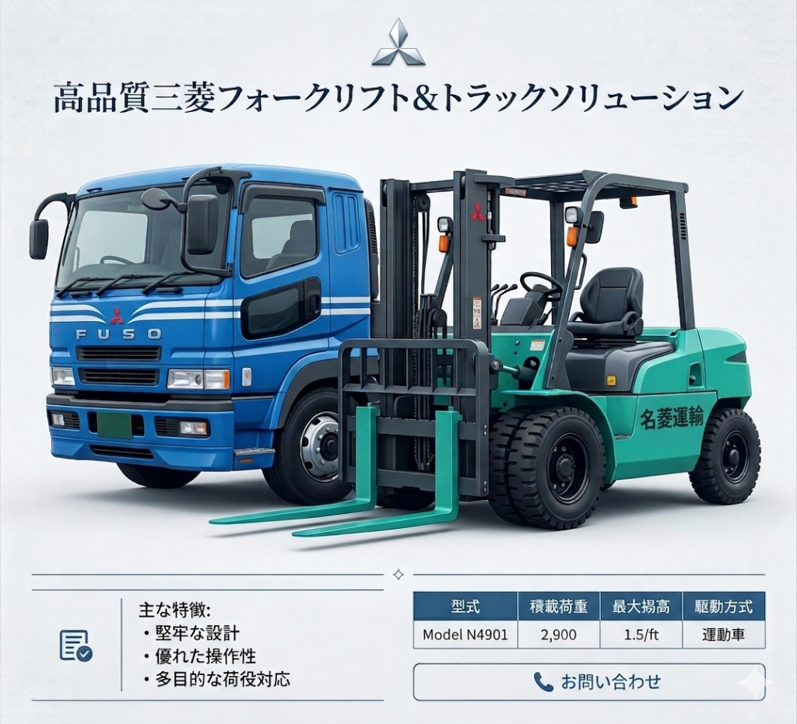

COMPANY
企業情報
ABOUT US
代表挨拶
当社は、名古屋を起点に
中部圏のものづくり現場へ、
工作機械を確実に届けることを使命として
事業を続けてまいりました。
出荷試験・出荷検査・梱包・輸送・
搬入・据付までを一貫して担い、
安全で丁寧な作業品質を
最優先に取り組んでいます。
今後も、技術と連携力を磨き、
現場に信頼されるパートナーであり続けます。
代表取締役 新間 健一朗
会社概要
- 会社名
- 株式会社名菱運輸
- 代表者
- 代表取締役 新間 健一朗
- 設立
- 1971年10月
- 資本金
- 1,500万円
- 従業員数
- 32名
- 事業内容
- 工作機械の出荷試験・出荷検査・梱包・輸送・搬入・据付、機械リニューアル、バックアップパーツ修理・検査
- 対応エリア
- 名古屋を起点に中部圏
- 主要取引銀行
- 名古屋銀行 茶屋坂支店
三菱UFJ銀行 大曽根支店
商工中金 名古屋支店 - 主要取引先
- MDロジス株式会社
三菱電機メカトロニクスエンジニアリング株式会社
株式会社名古屋化学工業所 - 所在地
- 本社：名古屋市東区大幸4丁目19-16
エンジニアリング事業部：尾張旭市大塚町3丁目2-9 - TEL
- 052-711-0231
- FAX
- 052-711-3208
保有車両・設備

セフティローダーやフォークリフト等の保有車両に加え、工作機械の搬入・据付まで一貫して対応します。現場条件に応じた安全で柔軟な作業体制を構築しています。
- 10tセフティローダー車：1台
- 8tユニック車（ショート）：1台
- 2tダブルキャブユニック車：1台
- 7tフォークリフト：1台
- 5.5tフォークリフト：1台
- 3tフォークリフト：1台
- 2tフォークリフト：1台
- 1.5tフォークリフト：1台
- 3.5t電動ハンドリフト：3台
沿革
- 1971年10月 創業
- XXXX年XX月 法人化
- XXXX年XX月 本社移転（大幸）
- XXXX年XX月 エンジニアリング事業部開設（尾張旭）